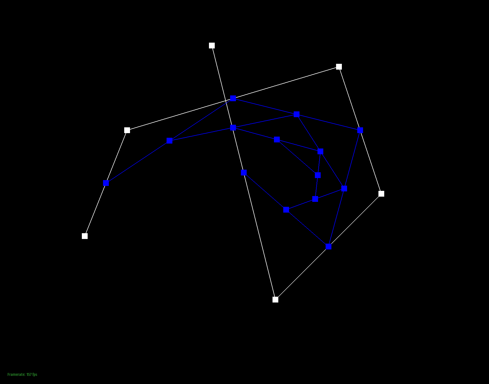
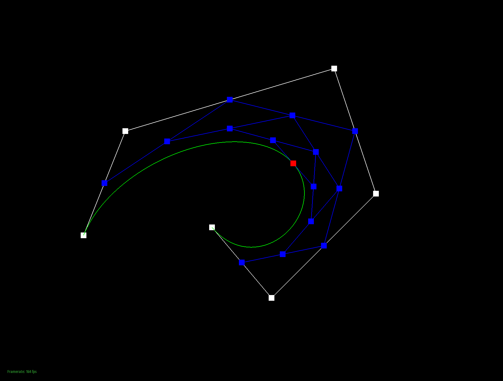
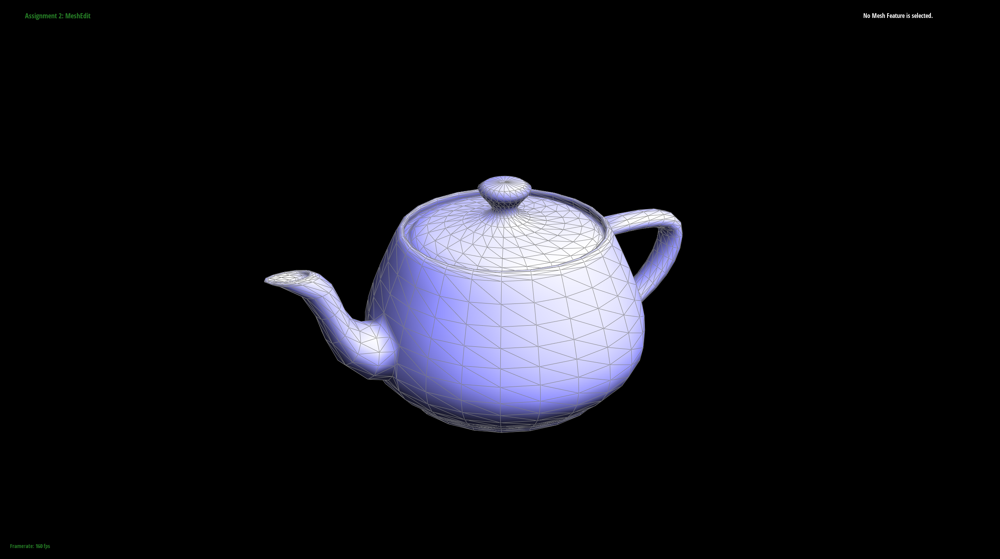
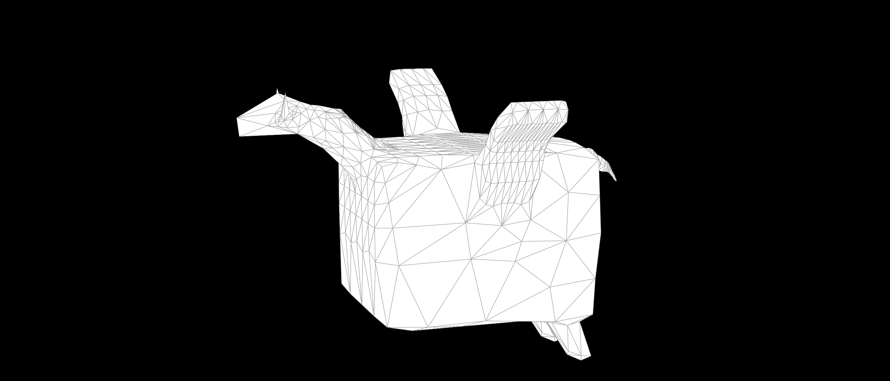

Overview
In this project, we implemented bezier curves, surfaces, and most importantly, several mesh editing operations for half-edge data structures, including area-weighted vertex normals, edge flip, edge split, and loop subdivision. We also use Blender to create our own models and export them as .dae files to test our mesh operations. This project helped us understand the basis of modern 3D modeling and rendering softwares. We also learned the basic usage of Blender, which will definitely be helpful in the future.
Section I: Bezier Curves and Surfaces
Part 1: Bezier Curves with 1D de Casteljau Subdivision
Briefly explain how de Casteljau algorithm works and how you implemented it in order to evaluate Bezier curves.De Casteljau algorithm works by taking in a set of control points and a parameter \(t\). It then recursively evaluates the points at each level of the algorithm by linearly interpolating between every two adjacent points at each level to get the next level of points. The final point is the evaluated point on the Bezier curve. We create a std::vector to store the next level of points and then iterate through the current level of points. We store the next level of points in the vector and return it at the end of the algorithm.
Take a look at the provided .bzc files and create your own Bezier curve with 6 control points of your choosing. Use this Bezier curve for your screenshots below.
I created a Bezier curve in the bzc directory with 6 control points. The 6 control points are (0.200, 0.350), (0.300, 0.600), (0.800, 0.750), (0.900, 0.450) (0.650, 0.200) (0.500, 0.800)
Show screenshots of each step / level of the evaluation from the original control points down to the final evaluated point. Press E to step through. Toggle C to show the completed Bezier curve as well.
|
|
|
|
|
|
|

|
Show a screenshot of a slightly different Bezier curve by moving the original control points around and modifying the parameter \(t\) via mouse scrolling.
The following images shows a slightly different Bezier curve by moving the original control points around and modifying the parameter \(t\) via mouse scrolling.
|

|
Part 2: Bezier Surfaces with Separable 1D de Casteljau
Briefly explain how de Casteljau algorithm extends to Bezier surfaces and how you implemented it in order to evaluate Bezier surfaces.The De Casteljau algorithm can be extended to Bezier surfaces by taking in a matrix of controlled points and performing interpolation in two dimensions. Our implementation involves a control matrix of size n x n with each point being a 3D vector. From there, for each n rows of the matrix, we evaluate n points in the u direction using De Casteljau's algorithm. Finally, perform De Casteljau's algorithm once again on the new n points but in the v direction to evaluate the point that lies on the Bezier surface.
Show a screenshot of bez/teapot.bez (not .dae) evaluated by your implementation.

|
Section II: Triangle Meshes and Half-Edge Data Structure
Part 3: Area-Weighted Vertex Normals
Briefly explain how you implemented the area-weighted vertex normals.We implemented the area-weighted vertex normals by first iterating through all the faces adjacent to the current vertex and computing the normal and area of each face. We add up the products of the normal and the area of each face as a weighted sum. And add up the areas to get the total weights. Finally, we divide the weighted sum by the total weights and normalize the result to get the area-weighted vertex normals.
Show screenshots of dae/teapot.dae (not .bez) comparing teapot shading with and without vertex normals. Use Q to toggle default flat shading and Phong shading.
The following images shows the teapot shading with and without vertex normals.
|
|

|
Part 4: Edge Flip
Briefly explain how you implemented the edge flip operation and describe any interesting implementation / debugging tricks you have used.
First we take all the elements related to the flipped edge and the two triangles adjacent to the edge. We then
reset the vertex and next member of the half edges to make the edge flip. Then we update the half edges of other
edges that are in the triangles adjacent to the flipped edge. Their next member needs to be updated. Finally, we
update the face members of the half edges and the half edge members of the faces since some of the half edges
belong to different faces after flipping.
For debugging, we didn't use too many tricks. We just insert several assert statements to check if the pointers
are set as expected.
Show screenshots of the teapot before and after some edge flips.
|
|
|
Write about your eventful debugging journey, if you have experienced one.
Thankfully, I did not experience much of a debugging journey other than that we forgot to set the face pointers of the half edges.
Part 5: Edge Split
Briefly explain how you implemented the edge split operation and describe any interesting implementation / debugging tricks you have used.
To implement edge split operation, I first implemented a helper function to split a triangle. If the half edge
of the split edge is not a boundary edge, this function will be called to split the triangle and preserve the
half edge structure. For non-boundary edges, this function will be called twice to split the two triangles
adjacent to the split edge. For boundary half edges, we directly split the half edge into half.
As for the triangle split, we first create a new edge and corresponding half edges to link the midpoint of the
split edge.
This also requires us to create a new face and a new half edge. We then update the members corresponding to
these elements to preserve the half edge structure in these two triangles. In this function we will not consider the twin
and edge member of the newly created half edge for the split edge. We will update them after both half edges of
the split edge are split.
After we split both half edges of the split edge, we get four half edges whose twins and edges members need to
be updated.
At this time we should create a new edge object and set the members of the edge and the four half edges.
Show screenshots of a mesh before and after some edge splits.
The following images shows the beetle before and after some edge splits. Note that the boundary edges are split correctly.
|
|
|
Show screenshots of a mesh before and after a combination of both edge splits and edge flips.
The following images shows the beetle before and after a combination of both edge splits and edge flips.
|
|
|
Write about your eventful debugging journey, if you have experienced one.
When we forgot to set some of the members of newly created elements or set them incorrectly, we encountered runtime errors. And after several assertions, we found what went wrong and fixed it.
If you have implemented support for boundary edges, show screenshots of your implementation properly handling split operations on boundary edges.
As shown in the previous images, the boundary edges are split correctly.
Part 6: Loop Subdivision for Mesh Upsampling
Briefly explain how you implemented the loop subdivision and describe any interesting implementation / debugging tricks you have used.
First I iterated through all the vertices, setting their flags isNew = false, and computed and stored their new
positions. Next I iterated through
all the edges, adding them to a vector of original edges, and calculating new positions for future new
vertices, setting their isNew flag = true. Then
I iterated through the original edges and split all of them, updating all of the new edges's flags to true and
old ones to false. Finally, I flipped any newly created
edge that had an old and new vertex and updated the positions of the old vertices to the new positions
calculated at the start.
Some debugging tricks I used were to comment out/in blocks of code to run my block in sections. This made it
easy to identify which part of the code
was causing the issue. Moreover I printed some of the new computations to see if they made sense or not. I also
used the terminal and paid attention for any error flags.
Take some notes, as well as some screenshots, of your observations on how meshes behave after loop subdivision. What happens to sharp corners and edges? Can you reduce this effect by pre-splitting some edges?
From the screenshots below, we can observe that the sharp corners and edges smooth out after each loop subdivision.

|
Yes you can reduce this affect. After pre-splitting the front left side of the rings below, the smoothness of the ring is decreased as you can make it a little more rigid.
Load dae/cube.dae. Perform several iterations of loop subdivision on the cube. Notice that the cube becomes slightly asymmetric after repeated subdivisions. Can you pre-process the cube with edge flips and splits so that the cube subdivides symmetrically? Document these effects and explain why they occur. Also explain how your pre-processing helps alleviate the effects.
Below are images after subdivision without pre-processing. From the images, we can observe that the cube turns into an asymmetric sphere-like shape. This is because of the asymmetric diagonal edge on each surface of the cube.
To combat this, we take each diagonal edge and split it. In doing so, the diagonal edge turns into a symmetric cross across the surface of the cube. Because of this pre-processing, when performing loop subdivision, the sphere that it turns into is more symmetric.
No extra credit extensions.
Part 7 (Optional, Possible Extra Credit)
Save your best polygon mesh as partsevenmodel.dae in your docs folder and show us a screenshot of the mesh in your write-up.The following images shows our custom mesh partsevenmodel.dae, which is a fat wyvern.
|  |
Include a series of screenshots showing your original mesh and your mesh after one and two rounds of subdivision. If you have used custom shaders, include screenshots of your mesh with those shaders applied as well.
The following images shows our custom mesh partsevenmodel.dae after one and two rounds of subdivision. We also implemented a PBR shader that uses Cook-Torrance BRDF and Trowbridge-Reitz distribution to model a metallic surface. However the edge looks rather bright and we have to clamp the BRDF to at most 0.1 to make it look better. We also implemented a shader that shows the normal of the mesh.
Describe what you have done to enhance your mesh beyond the simple humanoid mesh described in the tutorial.
No enhancements were made.